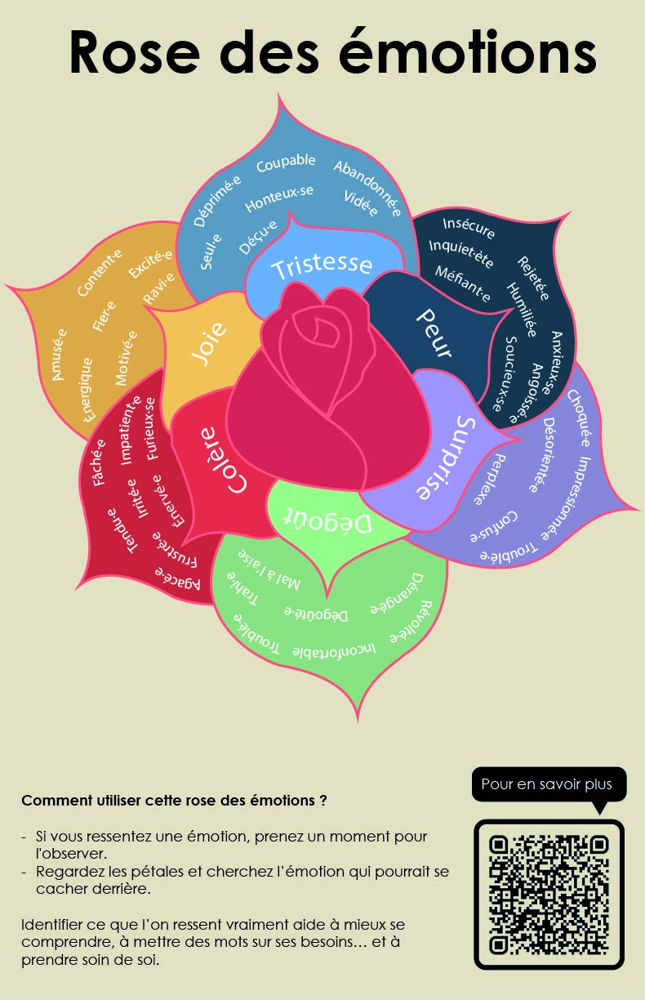

Rose des émotions
Une affiche de sensibilisation qui traduit la complexité des émotions humaines à travers une représentation visuelle accessible et intuitive.
2025
role
Mandat
Contexte
Ce projet a été réalisé dans le cadre d’un mandat proposé par l’Archipel du Collège de
Bois-de-Boulogne, un
service regroupant l’aide psychosociale, l’orientation et le soutien à la réussite.
L’objectif était de concevoir une série d’affiches de sensibilisation pour les étudiants et
leurs services. Les créations sélectionnées étaient ensuite
diffusées au sein de l’établissement.
À travers ce projet, j’ai choisi la demande qui portait les émotions, en m’appuyant sur les
notions d’émotions primaires et secondaires. L’intention était de proposer une
représentation visuelle qui aide à mieux comprendre ce que l’on ressent, tout en restant
accessible et
engageante.


Mon rôle
J’ai conçu l’affiche dans son ensemble, de la réflexion conceptuelle à la réalisation
visuelle.
J’ai travaillé sur la structuration de l’information, la hiérarchie des émotions et leur
traduction graphique, afin de rendre un contenu théorique plus intuitif et lisible.
L’objectif était de transformer une notion parfois abstraite en un outil visuel concret,
facilement appropriable par le public.
Le projet a été sélectionné par l’Archipel et diffusé au sein de l’école. Il a également été
décliné sous forme de coussins, ce qui renforce son appropriation dans un contexte
quotidien.
Logiciels utilisés
Mes apprentissages
Ce projet m’a permis de travailler sur la traduction visuelle d’un contenu conceptuel et
sensible, en trouvant un équilibre entre esthétique et clarté.
Il m’a aussi appris à concevoir avec une intention d’impact réel, en m’adressant à un public
dans un contexte précis, avec des enjeux liés au bien-être et à la compréhension de soi.
Enfin, il a renforcé mon intérêt pour les projets qui allient design et sens, et qui peuvent
avoir une portée concrète dans le quotidien des personnes.